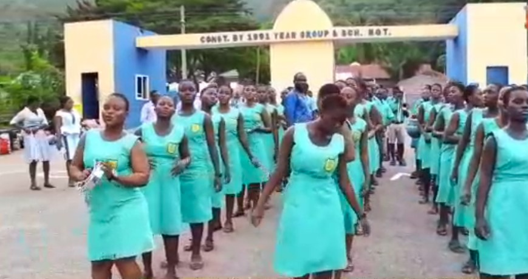

56
Asuansi Tech. Inst.
Assin Foso Technical Institute
Cape Coast Tech. Inst.
Winneba Technical Institute
Panfokrom Technical Institute
Biriwa Technical Institute
Agona Swedru Technical Institute
Enyan-Abaasa Technical Institute
Gomoa Adaa Technical Institute
Ajumako-Afranse Technical Institute
Breman Asikuma Technical Institute
TSC Technical Institute, Assin Edubiase
TSC Technical Institute, Awutu Breku
GRATIS Technical Institute, Cape Coast
Social Welfare Girls' Technical Institute
Mankessim Technical Institute
New Ebu Technical Institute
Asafora Technical Institute
Assin Jakai Applied Technology Institute
Adisadel College, Cape Coast
Holy Child School, Cape Coast
Mfantsipim School, Cape Coast
St.Augustine's College, Cape Coast
Wesley Girls' High School, Cape Coast
Mfantsiman Girls' Senior High
Aggrey Mem. A.M.E.Zion, Cape Coast
Swedru Senior High
Nsaba Presby Senior High
Siddiq Senior High Sch., Agona Nyakrom
Nyakrom Senior High Tech
Breman Asikuma Senior High
Adankwaman Senior High
Awutu Winton Senior High, Awutu Beraku
Ghana National College, Cape Coast
Academy of Christ the King, Cape Coast
University Practice Senior High, Cape Coast
Winneba Senior High
Ekumfi T. I. Ahmadiiyya SHTS, Esakyir
Apam Senior High
Mozano Senior High
Edinaman Senior High, Elmina
Methodist High School, Saltpond
Twifo Praso Senior High
Twifo Hemang Senior High/Tech
Boa-Amponsem Snr High, Dunkwa-on-Offin
Diaso Senior High
Moree Comm. Senior High
Aburaman Senior High
Abakrampa Senior High/Tech
Agona Namonwora Comm.Senior High
Kwanyarko Senior High
Agona Fankobaa Senior High
Swedru Sch. Of Business
Enyan Maim Comm. Day School
Mando Senior High/Tech.
Enyan Denkyira Senior High/Tech
Bisease Senior High School
Odoben Senior High
Brakwa Senior High/Tech
Assin State College, Assin Beraku
Gyaase Community Senior High
Obiri Yeboah Senior High/Tech, Assin Fosu
Assin North Senior High/Tech, Asempaneye
Assin Nsuta Senior High School
Assin Manso Senior High
Nyankumasi Ahenkro Snr. High
Awutu Bawjiase Comm. Senior High School
Odupong Comm. Day School, Kasoa Ofaakor
Obrachire Senior High/Tech
Senya Senior High School
Effutu Senior High/Tech, Cape Coast
Oguaa Senior High/Tech, Cape Coast
J.E.A. Mills Senior High, Otuam
Fettehman Senior High, Gomoa Fetteh
Gomoa Gyaman Senior High
Potsin T.I. Ahm. Senior High
Gomoa Senior High/Tech, Dewurampong
College of Music Senior High, Mozano
Eguafo-Abrem Senior High
Komenda Senior High/Tech
Mankessim Senior High/Tech
Abeadze State College, Dominase
Kwegyir Aggrey Senior High, Anomabo
Jukwa Senior High/Tech
Dunkwa Senior High/Tech
Ayanfuri Senior High
Kyekyewere Comm. Senior High School
Akyin Senior High, Arkra-Mbroboto
Ogyeedom Comm.Snr High/, Gomoa Afransi
Mokwaa Senior High School
St.Gregory Catholic Snr High,Buduburam
Kobina Ansah SHS, Kobina Ansa
S.D.A Senior High School, Gomoa Jukwa
Bontrase Senior High Tech. Sch